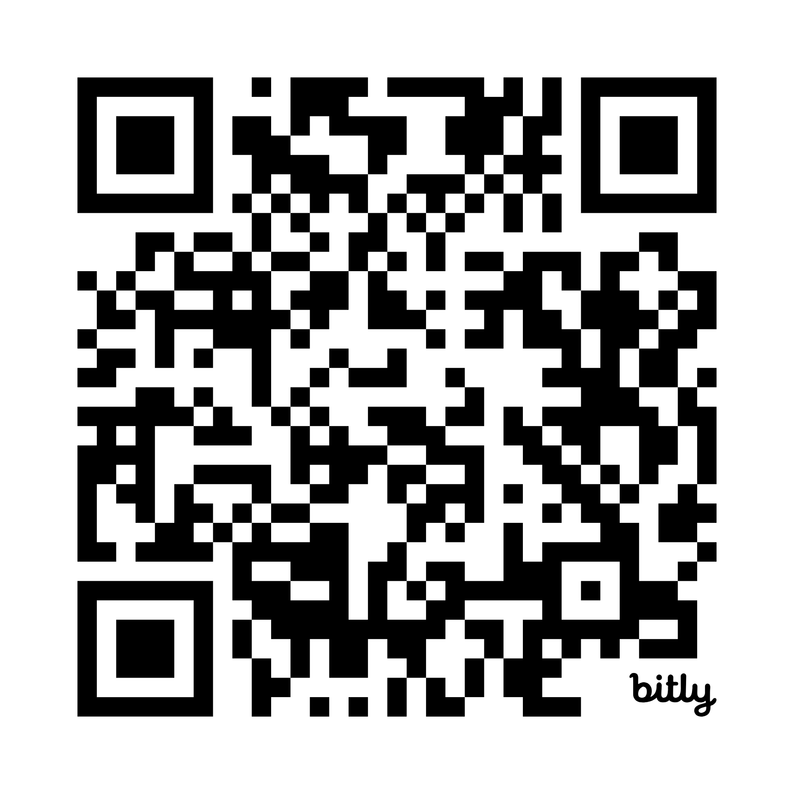

Komuniti Lestari Sifar Sisa (ReSisa)
Pengurusan Sisa Digital & Inovasi Tenaga Komuniti
Projek Libatsama Universiti-Komuniti | Dr. Syazwan Aizat Ismail, USM
Visi Program
Komuniti Lestari Sifar Sisa (ReSisa) ialah inisiatif USM dan komuniti KRT Jalan Kuala Dua untuk mengurangkan sisa rumah tangga dengan:
- Pendidikan amalan lestari (3R),
- Pengurusan sisa dengan aplikasi digital moden,
- Gabungan inovasi bioteknologi Sel Bahan Api Mikrob (MFC) bagi menjana tenaga dari sisa organik.
Sasaran: 100 isi rumah selama 12 bulan.
Cabaran & Rationale
- Kadar kitar semula & pengasingan di rumah sangat rendah.
- Sisa makanan bercampur sisa lain, membebankan tapak pelupusan.
- Perosak (tikus, lalat) bertambah, dan risiko kesihatan meningkat.
- Pengetahuan & motivasi komuniti untuk amalan 3R masih lemah.
- Keperluan solusi lestari yang mudah serta digital dan boleh diikuti semua lapisan.
Strategi Program & Modul Bengkel
1. Pengambilan & Penilaian Awal
Pemilihan 100 isi rumah. Tinjauan awal (baseline) untuk menilai amalan & pengetahuan semasa.
2. Bengkel Bina Upaya Komprehensif (5 Sesi)
- Asas Pengurusan Sisa Pepejal & kepentingan 3R (Kurangkan, Guna Semula, Kitar Semula).
- Teknik Pengasingan Sisa: plastik, kertas, kaca, logam & sisa organik.
- Pengurusan Sisa Organik: Kompos sederhana, pengumpulan sisa untuk MFC.
- Pengenalan MFC: Prinsip, faedah, aplikasi MFC kecil.
- Latihan Praktikal Aplikasi ReSisa: Cara melapor & rekod sisa setiap minggu dengan telefon pintar.
Digitalisasi Pengurusan Sisa: Aplikasi ReSisa
-
Muat turun & guna aplikasi ReSisa – setiap rumah wajib guna.
-
Laporan mingguan:
- Kategori sisa (Kitar semula, Organik), jumlah anggaran, gambar & lokasi.
- Laporan isu sampah di kawasan sekitar secara langsung.
-
Papan Pemuka Komuniti (Dashboard):
Pantau data pengasingan sisa secara masa nyata. Lihat kedudukan/rekod untuk pertandingan komuniti.
-
Pertandingan & Ganjaran:
- Sistem mata berdasarkan kekerapan & kualiti pengasingan sisa.
- Insentif kecil diberikan setiap suku tahun untuk pemenang paling aktif.
Inovasi Komuniti: Sel Bahan Api Mikrob (MFC)
-
Pembinaan prototaip MFC komuniti:
- Bahan mesra alam & sisa organik komuniti digunakan.
- Sesi demonstrasi untuk komuniti: sisa diubah menjadi tenaga elektrik kecil.
-
Peningkatan kesedaran: Komuniti sendiri lihat potensi "waste-to-energy" dan teknologi hijau.
Pemantauan, Penilaian & Pelaporan
-
Pemantauan Berterusan: Data ReSisa dianalisis sepanjang program.
Tinjauan pertengahan & akhir: ukur perubahan pengetahuan, sikap & amalan.
-
Audit sisa sampel: Sahkan laporan pengasingan sisa.
-
Maklum balas berkala: Pembentangan berkala kepada komuniti untuk penambahbaikan segera.
-
Pelaporan & Dokumentasi Lengkap: Laporan kemajuan & akhir: kejayaan, cabaran & pelajaran untuk kesinambungan projek.
Bahan dokumentasi (gambar aktiviti, testimoni, statistik).
Maklumat & Penyertaan
- Sasaran: 100 isi rumah di sekitar komuniti KRT Jalan Baru
- Tempoh: 12 bulan
- Modul: Tinjauan awal, 5 bengkel, guna aplikasi, pembangunan & demonstrasi MFC, pertandingan, audit & laporan
- Kolaborasi: USM, komuniti, pakar bioteknologi
Untuk pertanyaan atau daftar penyertaan:
Dr. Syazwan Aizat bin Ismail
Emel: drsai@usm.my
Telefon: 014-9664113
Daftar – Imbas QR Code
Sila imbas QR code di bawah untuk capaian pantas ke laman pendaftaran atau maklumat program:

Jika sukar mengimbas, sila hubungi:
Dr. Syazwan Aizat bin Ismail – drsai@usm.my
Tel: 014-9664113